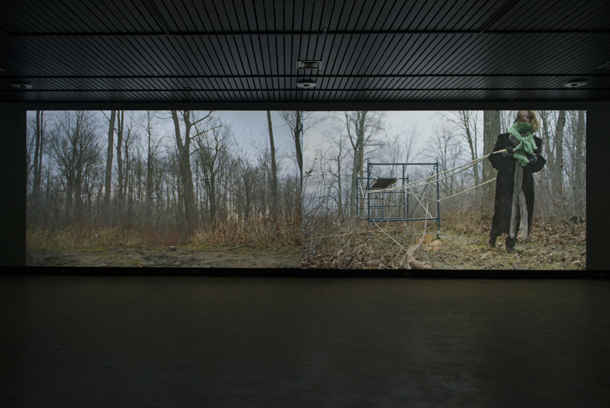

Jessica Arseneau

Photo crédits: Louis-Philippe Chiasson

Vues d'exposition, Galerie d'art Louise-et-Reuben-Cohen, Moncton
Photo crédits: Mathieu Léger


Images fixes tirées de la vidéo



Vues d'exposition, Galerie d'art Louise-et-Reuben-Cohen, Moncton
Photo crédits: Mathieu Léger
Lost Idyll
2015
Vidéo numérique en deux projections
00:11:55 en boucle
Comprenant alternativement une ou deux images projetées côte à côte, cette installation vidéo nous montre une femme transportant un encombrant échafaudage à travers divers paysages de vastes étendus et une forêt automnale. Entrante dans le champ de l'une des images et sortante de l'autre, cette femme effectue un mouvement sisyphéen, se répétant d'un endroit à un autre dans une mobilité continue.
Structures éphémères composant nos paysages urbains, les échafaudages caractérisent le spectacle du quotidien et sont des figures communes de notre imaginaire collectif. La solitude de cette femme, dans le contexte de ce double espace en friche du champ et de la forêt, renvoie à la difficulté communément ressentie par tous de se projeter dans le futur, par définition indéterminé. Une ambiguïté s'impose entre l'objet qui suggère une fixité et cette traversée perpétuelle. Elle rappelle la systématisation d'un quotidien qui s'oppose à ce qui est de plus en plus transitoire et indéfiniment inachevé.
Avec : Violaine Gauvreau
Caméra : Éric Delarue
Assistant : Marc-Yvan S. Poitras
MERCI
Léandre Bourgeois
Jean-Francois Boisvenue
Martine Brisson
Jérôme Décarie
Jean-François Desaulniers
Claude Desbiens
Normand Forget
Élodie Lançon
Will Niava
Julie Perron
Martin Skorek
Carl Surprenant
Lost Idyll (2015) est distribué par Groupe Intervention Vidéo (GIV) : givideo.org